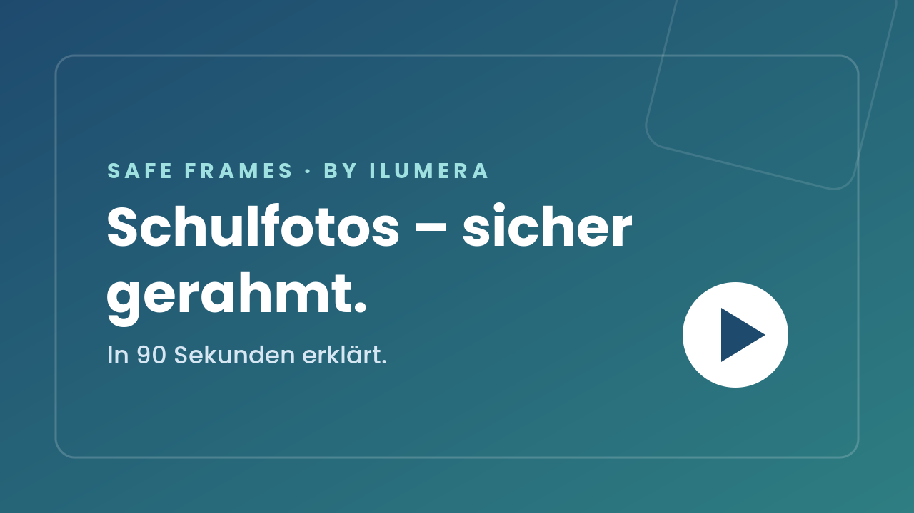

Klassenfotos, Jahrbücher, Abschlusszeitungen: Safe Frames gibt Ihrer Schule einen klaren, nachvollziehbaren Weg für den datenschutzbewussten Umgang mit Schülerfotos. Damit Erinnerungen entstehen dürfen – ohne Bauchgefühl und ohne Risiko.
Wie aus unsortierten Fotos ein sicherer, prüfbarer Ablauf wird – verständlich für Schulleitung und Eltern.

▶ Video folgt in KürzeDas Erklärvideo wird über ElevenLabs vertont und folgt in Kürze. Das Vorschaubild ist bereits hinterlegt.
An vielen Schulen entstehen wunderbare Bilder. Doch sobald sie gespeichert, sortiert oder gedruckt werden, stellen sich Fragen zu Einwilligung, Datenschutz und Löschung. Safe Frames beantwortet sie mit einem klaren Ablauf statt mit Bauchgefühl.
Einwilligungen und Widerrufe werden respektiert und dokumentiert – Familien können sich darauf verlassen.
Ein klarer Prozess entlastet Lehrkräfte und Projektteams: Jeder weiß, was als Nächstes zu tun ist.
Nachvollziehbare Freigaben und ein Löschkonzept reduzieren Haftungs- und Reputationsrisiken der Schule.
Hinter Safe Frames steht eine schlanke Struktur aus drei Ordnern (in einer späteren Ausbaustufe sieben Phasen) – für Sie bleibt der Ablauf angenehm einfach. Künftig unterstützt intelligente Assistenz bei der Routine (z. B. Erkennen unscharfer Bilder) und ein biometrischer Abgleich, der ausschließlich lokal und nur während der Sitzung läuft – ohne dauerhaftes Gesichtsprofil.
Alle Fotos kommen an einem zentralen, von der Schule kontrollierten Ort zusammen – keine Messenger, keine privaten Geräte.
Pro Bild werden Einwilligung und Verwendungszweck geprüft und sauber in Phasen getrennt.
Nur geprüfte Bilder kommen ins Druckpaket – kontrolliert nach dem Vier-Augen-Prinzip vor jeder Freigabe.
Nach Projektende wird nach klaren Fristen archiviert oder gelöscht. Nichts bleibt unkontrolliert liegen.
Safe Frames nutzt den biometrischen Abgleich bewusst nur lokal und sitzungsbasiert – ohne dauerhaftes Profil. Nach EU AI Act ist das als hohes Risiko eingeordnet; wir tragen das bewusst und erfüllen die zugehörigen Pflichten.
Der biometrische Abgleich läuft ausschließlich lokal und nur während der Sitzung – kein dauerhaftes Gesichtsprofil, keine Personenzuordnung, keine Emotionserkennung.
Vor jeder Druckfreigabe prüfen zwei Personen das Druckpaket gemeinsam. So werden Fehler vor dem Druck abgefangen.
Freigaben, Ausschlüsse und Zwecke werden nachvollziehbar festgehalten – eine solide Grundlage für Ihren Datenschutzkontakt.
Speicherfristen, Archivierung und Löschung sind Teil des Prozesses – statt vergessener Bilder auf verstreuten Geräten.
Einwilligung und Zweck werden je Bild geprüft, Daten sparsam und nur für das Printprodukt verarbeitet – Speicherfristen und Betroffenenrechte sind Teil des Ablaufs.
Der biometrische Abgleich fällt unter Anhang III (hohes Risiko). Wir ordnen das ehrlich ein und erfüllen die Pflichten – mit menschlicher Letztentscheidung (Vier-Augen-Prinzip).
Unser Assistent beantwortet Fragen zu Datenschutz, Ablauf und Pilotbetrieb – verständlich und auf Grundlage des Projektkonzepts. Klicken Sie unten rechts auf das Chat-Symbol, um direkt zu starten.
Lieber persönlich? Pilot anfragen →Nein. Die DSGVO verbietet Klassenfotos nicht grundsätzlich, stellt aber Anforderungen an Rechtsgrundlage, Einwilligung, Zweckbindung, sichere Verarbeitung und Löschfristen. Safe Frames hilft, diese Anforderungen organisatorisch sauber abzubilden.
Ja – aber bewusst datensparsam: Safe Frames nutzt einen biometrischen Abgleich, der ausschließlich lokal und nur während der Sitzung läuft. Es entsteht kein dauerhaftes Gesichtsprofil und keine Personenzuordnung; die finale Entscheidung trifft immer ein Mensch (Vier-Augen-Prinzip). Nach EU AI Act ist das als hohes Risiko eingeordnet – die zugehörigen Pflichten werden erfüllt.
Aktuell ist Safe Frames ein Prozess- und Organisationskonzept (Konzept-/MVP-Phase, Stand Juni 2026). Empfohlen wird zunächst ein Pilotbetrieb an 2–3 Schulen; eine schlanke Software ist eine optionale spätere Ausbaustufe.
Nein. Safe Frames trifft keine juristische Bewertung und ersetzt keine rechtliche Prüfung. Es schafft die technische und organisatorische Grundlage für einen datenschutzbewussten Umgang mit Schülerfotos.
Pro Bild werden Einwilligung und Verwendungszweck geprüft. Geprüfte Bilder werden freigegeben, nicht nutzbare Bilder separat als Nachweis aufbewahrt und nicht gedruckt. So bleiben Freigaben und Widerrufe nachvollziehbar.
Nach Projektabschluss wird nach festgelegten Fristen archiviert oder gelöscht. Das Lösch- und Archivierungskonzept ist fester Bestandteil des Ablaufs.
Safe Frames sucht 2–3 Schulen für einen begrenzten Pilotbetrieb. Geringer Aufwand, schnelle Wirkung – und Sie gestalten den Standard mit.
📞 Pilot anfragen: 0173-3110773